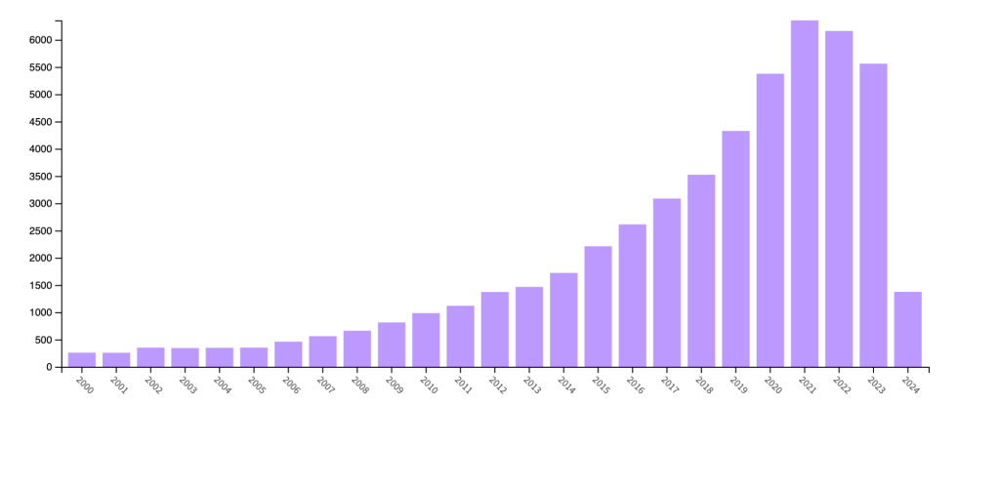
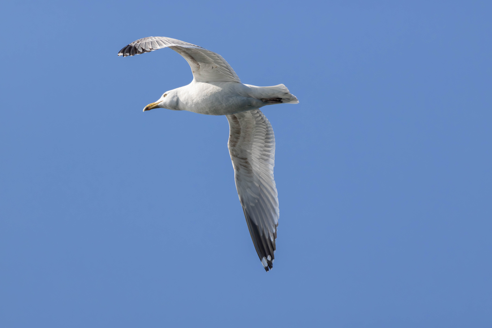
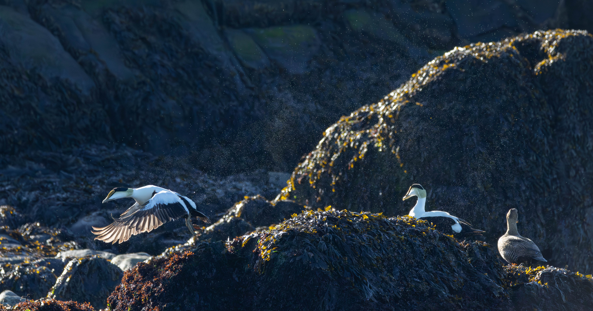
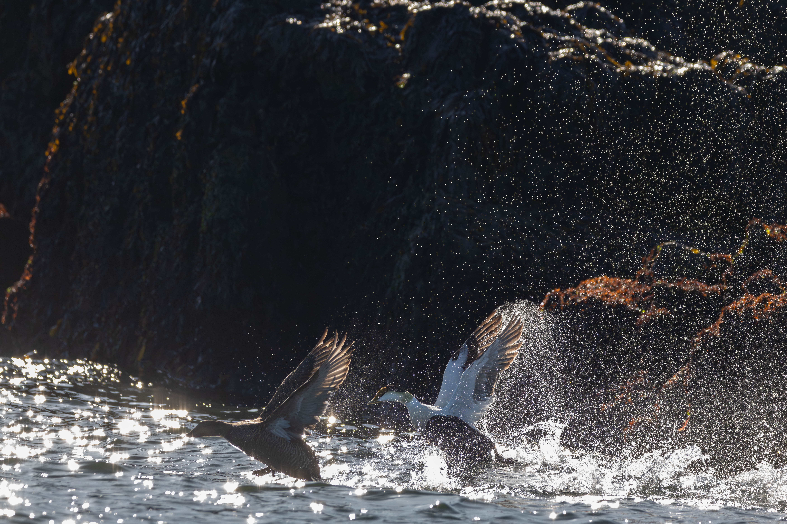
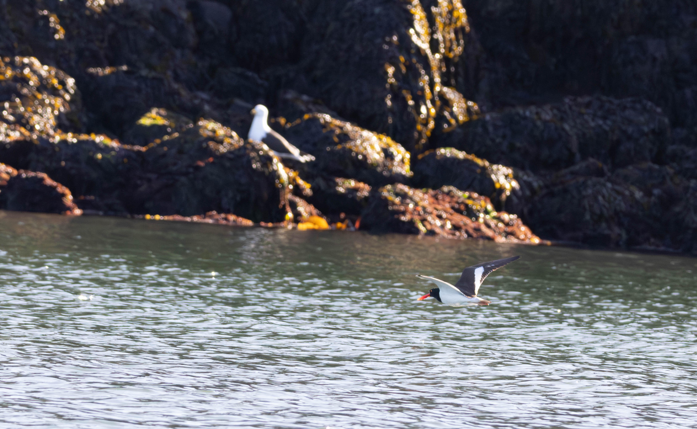
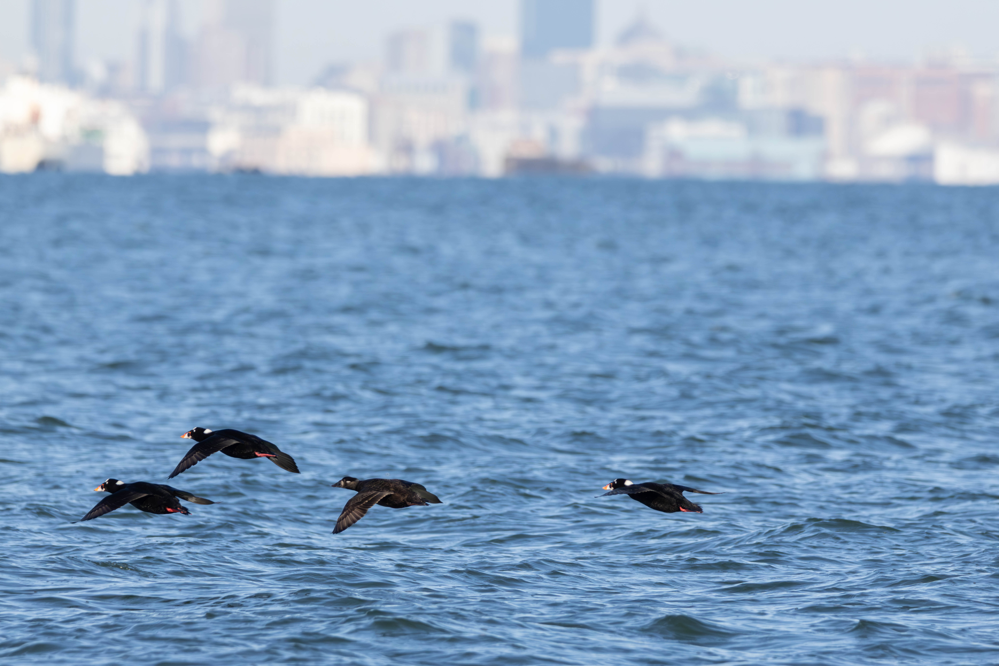

Boston City Nature Challenge
The City Nature Challenge is a fun worldwide collaborative bio-blitz with cities across the world to observe the most species (April 26 - April 29) and then ID them (April 30 - May 6)! We’ll be documenting urban biodiversity within the I-495 corridor, out to Stellwagen Bank, including Cape Cod and islands. It’s simple, it’s fun, and it contributes to scientific data helping to better understand our world and our non-human neighbors!
.
Copied from -> https://www.bostoncnc.org/
Citizen science is an amazing movement that is becoming increasingly more and more impactful as the years go by. Just look at the number of publications with the keyword “citizen science” over the years.

Yet how do we actually define citizen science?
Citizen science is a very broad term that can have many nuances depending on who you talk with. However a very simple definition that I am quite fond of is as follows:
“Citizen science broadly refers to the active engagement of the general public in scientific research tasks. Citizen science is a growing practice in which scientists and citizens collaborate to produce new knowledge for science and society.” (Vohland et al. 2021)
I like this definition for two reasons:
- It calls out the fact that there is a need to engage the public in research. Putting the task of “engaging” back on the scientist. In other words scientists need to be mindful of how they are engaging the community.
- It speaks to the fact that there is a collaboration where both parties gain something, rather than a just a single researcher gaining new data for their project.
So now that we have a working definition of citizen science lets talk about the Boston City Nature Challenge! This past weekend there was a concentrated effort by scientists and the public alike to go out and catalog the biodiversity of the greater Boston area over the course of three days. As I am writing this there are currently 11,276 observations, representing 1,589 species (141 of which are birds in case you were curious). All of this was contributed by 1,227 observers. When you put this in context that this was just over the course of four days that is an amazing number of species seen. Especially since alot of these are not “professional” researchers going out to sample their focal taxa!
By the way 23 of those observations were mine :)
The best part of this is that you too can participate in something like this through the use of your own cellphone! You don’t need the fanciest piece of camera equipment to go and capture the local diversity. The tools to aid in the understanding of our natural world are in your hands, or at least they can be!
It is just the click of a few buttons to get the app here
You might be wondering at this point what I actually saw during this event right? Well I had the privilege to work with a group of other students to survey the Harbor Islands here in Boston for birds. We went out early in the morning last Friday in a boat around the islands. Part of our team was interested in the seal population, however I wanted to highlight the amazing avian biodiversity on these islands. In total we saw over 16 species of birds. Below are some of my photos, I hope that you enjoy them as much as I do.





If you want to see more pictures from the Boston City Nature challenge you can view them all here, which is the same link as above.
If you want to see more of my photos and citizen science you can see my eBird account and my iNaturalist account for more.
I hope you have a fantastic day and as always keep your eyes to the sky!
Cheers, Jonathan Dain